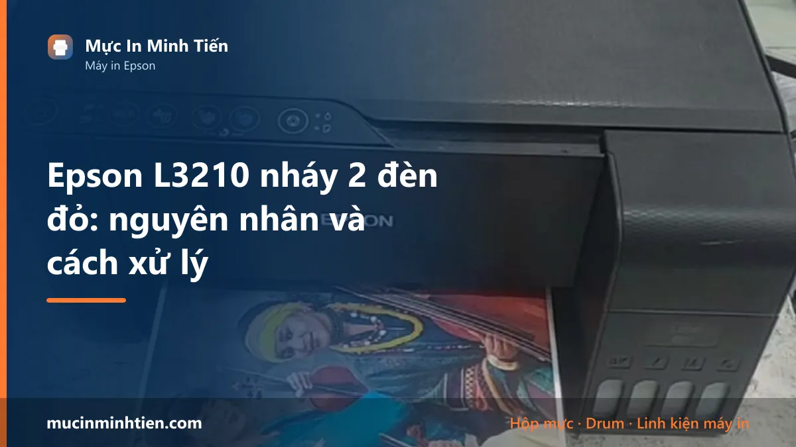
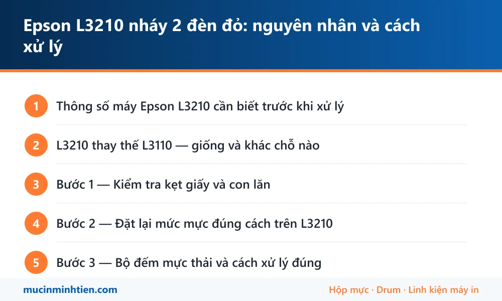

Epson L3210 nháy 2 đèn đỏ: nguyên nhân và cách xử lý

Epson L3210 nháy 2 đèn đỏ do kẹt giấy, chưa xác nhận mức mực sau khi châm, tràn bộ đếm mực thải, hoặc tắc đầu phun. Đây là đời thay thế cho L3110, dùng chung mực 003 nhưng bố trí nút và cách vào chế độ kiểm tra có khác đôi chút.
Thông số máy Epson L3210 cần biết trước khi xử lý
Biết đúng máy mình đang dùng loại nào giúp khỏi mua nhầm vật tư và khỏi làm theo hướng dẫn của dòng khác.
| Hạng mục | Chi tiết |
|---|---|
| Kiểu máy | Đa năng — in, scan, copy |
| Kết nối | Chỉ USB (bản có Wi-Fi là L3250) |
| Mực dùng | Epson 003 — dùng chung với L3110, L3150 |
| Vị trí trong dòng | Đời thay thế cho L3110, ra sau |
| Màn hình | Không có, đọc lỗi qua đèn |
L3210 thay thế L3110 — giống và khác chỗ nào
Nhiều khách mua L3210 vì hết hàng L3110, rồi tra hướng dẫn của L3110 để làm theo. Phần lớn thì đúng, nhưng có vài chỗ khác cần biết.
Giống nhau: cùng mực 003, cùng cơ chế bộ đếm mực thải, cùng nguyên lý đầu phun, cùng cách châm mực vào bình.
Khác nhau: bố trí nút bấm trên mặt máy có thay đổi, nên thao tác giữ nút để đặt lại mức mực hoặc vào chế độ kiểm tra không nằm đúng vị trí như trên L3110. Nếu làm theo video của L3110 mà không thấy máy phản hồi, rất có thể bạn đang giữ nhầm nút.
Cách chắc chắn nhất là dùng phần mềm Epson Printer Utility trên máy tính thay vì bấm nút — giao diện phần mềm giống nhau ở mọi đời máy.
Bước 1 — Kiểm tra kẹt giấy và con lăn
Quy trình giống các máy cùng dòng, nhưng L3210 có khay nạp sau hơi khác nên chú ý vùng tiếp giáp giữa khay và thân máy.
- Tắt máy, rút điện, đợi năm phút.
- Nhấc nắp trên, soi đèn dọc đường giấy.
- Kiểm tra vùng ngay dưới cụm đầu phun và khe ra giấy phía trước.
- Gỡ mảnh giấy theo chiều giấy đi.
- Lau con lăn nếu thấy bám bụi giấy trắng.
Nếu máy vẫn báo kẹt sau khi đã dọn sạch, nguyên nhân thường là cảm biến bị bụi mực hoặc bụi giấy che. Thổi nhẹ bằng bóng thổi bụi, không dùng miệng vì hơi ẩm làm nặng thêm.
Bước 2 — Đặt lại mức mực đúng cách trên L3210
Đây là chỗ khác biệt lớn nhất so với L3110 và cũng là chỗ nhiều người làm hụt.
Cách chắc ăn nhất, không phụ thuộc vị trí nút:
- Kết nối máy với máy tính bằng cáp USB.
- Mở Epson Printer Utility hoặc phần mềm Epson đi kèm driver.
- Tìm mục đặt lại hoặc xác nhận mức mực sau khi châm.
- Làm theo hướng dẫn trên màn hình, xác nhận đã châm đầy từng màu.
- In thử một trang.
Nếu không cài được phần mềm, thao tác trên máy là giữ nút giọt mực khoảng năm giây cho tới khi đèn phản hồi — nhưng nhớ nhìn kỹ ký hiệu trên nút, đừng làm theo trí nhớ từ máy đời cũ.
Bước 3 — Bộ đếm mực thải và cách xử lý đúng
Cơ chế giống hệt các máy dòng L: máy đếm số lần xả mực vệ sinh đầu phun, đủ ngưỡng thì khoá và báo Service Required.
Xử lý đúng phải làm hai việc cùng lúc — đặt lại bộ đếm và vệ sinh hoặc thay tấm thấm. Làm mỗi vế đầu thì máy chạy tiếp được một thời gian ngắn rồi mực tràn ra ngoài thật.
Với L3210 còn mới, chúng tôi thường khuyên khách xử lý sớm khi máy vừa báo, thay vì cố in thêm — tấm thấm càng ngậm nhiều thì càng khó vệ sinh và nhiều khả năng phải thay hẳn.
Bảng tra: dấu hiệu nào ứng với nguyên nhân nào
| Dấu hiệu | Nguyên nhân | Cách xử lý | Chi phí |
|---|---|---|---|
| Đèn giấy nháy, máy có tiếng kéo | Kẹt giấy hoặc dị vật | Soi đèn, gỡ theo chiều giấy | 0 – 150.000 đ |
| Dọn sạch giấy vẫn báo kẹt | Cảm biến bị bụi che | Thổi bụi bằng bóng thổi | 0 đ |
| Làm theo video L3110 mà máy không phản hồi | Giữ nhầm nút, bố trí nút khác | Dùng Epson Printer Utility trên máy tính | 0 đ |
| Châm mực xong vẫn báo cạn | Chưa đặt lại mức mực | Đặt lại qua phần mềm hoặc giữ nút giọt mực | 0 đ |
| Hai đèn nháy đồng thời, báo Service Required | Tràn bộ đếm mực thải | Đặt lại bộ đếm + xử lý tấm thấm | từ 200.000 đ |
| In thiếu màu sau khi châm | Tắc đầu phun | Nozzle Check rồi Head Cleaning | 0 – 150.000 đ |
Vật tư cho Epson L3210 có sẵn tại kho 77 Bắc Hải, Phường Diên Hồng, TP.HCM — xem bảng giá 773 mã hoặc gọi 0915 510 203 kèm model máy.
Khi nào nên gọi kỹ thuật viên
- Đã dọn đường giấy và thổi cảm biến mà vẫn báo kẹt
- Máy báo Service Required — xử lý cả bộ đếm lẫn tấm thấm
- Không cài được phần mềm Epson để đặt lại mức mực
- Head Cleaning ba lần vẫn thiếu màu
- Máy còn bảo hành và bạn không muốn tự tháo
Báo giá xử lý Epson L3210 tận nơi
| Hạng mục | Giá tham khảo |
|---|---|
| Kiểm tra, vệ sinh đường giấy và cảm biến | từ 100.000 đ |
| Vệ sinh đầu phun chuyên sâu | từ 150.000 đ |
| Đặt lại bộ đếm mực thải kèm vệ sinh tấm thấm | từ 200.000 đ |
| Cài đặt driver và phần mềm Epson tận nơi | từ 100.000 đ |
| Châm mực 003 | từ 60.000 đ/màu |
Kỹ thuật viên kiểm tra và báo giá trước khi làm — xem cam kết ở dịch vụ sửa máy in tận nơi TP.HCM.
Cách phòng tránh tái phát
- Cài sẵn phần mềm Epson trên máy tính ngay khi mua máy — sau này đặt lại mức mực hay chạy Nozzle Check đều nhanh và chắc hơn bấm nút.
- Hạn chế Head Cleaning, tối đa ba lần rồi để máy nghỉ vài giờ.
- In vài trang mỗi tuần để mực không khô trong vòi phun.
- Xử lý sớm khi máy vừa báo Service Required, đừng cố in thêm — tấm thấm ngậm càng nhiều càng khó cứu.
- Châm đúng mực 003, không pha trộn nhiều loại mực khác nhau vào cùng bình.
